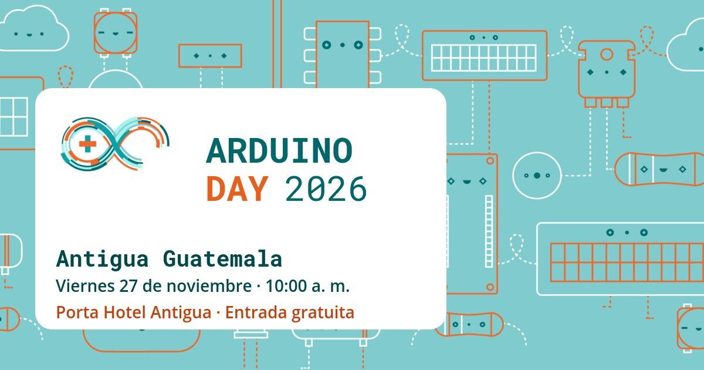
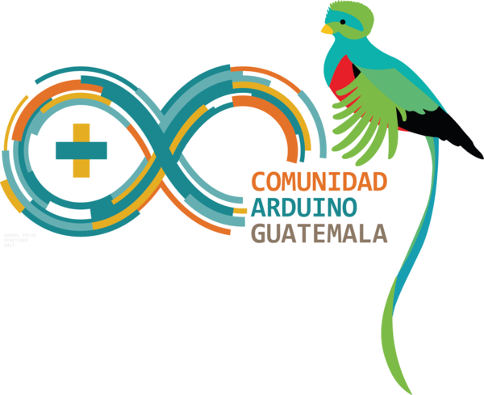

Próxima edición
Arduino Day 2026 · Antigua Guatemala
Viernes 27 de noviembre · 10:00 a. m. · Porta Hotel Antigua · Entrada gratuita


Quién organiza
Comunidad Arduino Guatemala
La comunidad de tecnología más grande de Guatemala. Nació en 2012 con Oscar Leche y hoy la lidera Yeffri Salazar.
Organiza hackatones, charlas, conferencias, el Arduino Day y el ArduChallenge, y se especializa en IoT, electrónica y robótica.
fb.com/arduinoguatemala